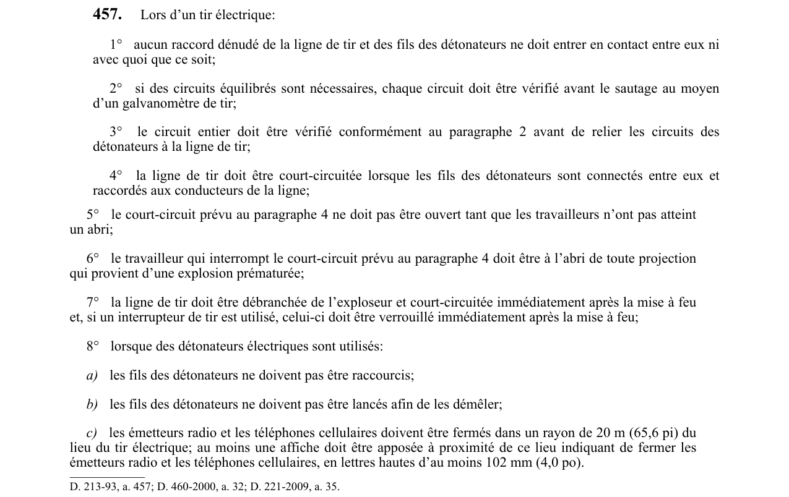

art-457-RSSM : tir électrique raccord dénudé ligne
Lors d’un tir électrique: 1° aucun raccord dénudé de la ligne de tir et des fils des détonateurs ne doit entrer en contact entre eux ni avec quoi que ce soit; 2° si des circuits équilibrés sont nécessaires, chaque circuit doit être vérifié avant le sautage au moyen d’un galvanomètre de tir; 3° le circuit entier doit être vérifié conformément au paragraphe 2 avant de relier les circuits des détonateurs à la ligne de tir; 4° la ligne de tir doit être court-circuitée lorsque les fils des détonateurs sont connectés entre eux et raccordés aux conducteurs de la ligne; 5° le court-circuit prévu au paragraphe 4 ne doit pas être ouvert tant que les travailleurs n’ont pas atteint un abri; 6° le travailleur qui interrompt le court-circuit prévu au paragraphe 4 doit être à l’abri de toute projection qui provient d’une explosion prématurée; 7° la ligne de tir doit être débranchée de l’exploseur et court-circuitée immédiatement après la mise à feu et, si un interrupteur de tir est utilisé, celui-ci doit être verrouillé immédiatement après la mise à feu; 8° lorsque des détonateurs électriques sont utilisés: a) les fils des détonateurs ne doivent pas être raccourcis; b) les fils des détonateurs ne doivent pas être lancés afin de les démêler; c) les émetteurs radio et les téléphones cellulaires doivent être fermés dans un rayon de 20 m (65,6 pi) du lieu du tir électrique; au moins une affiche doit être apposée à proximité de ce lieu indiquant de fermer les émetteurs radio et les téléphones cellulaires, en lettres hautes d’au moins 102 mm (4,0 po). Cette interdiction vise l'employeur.
🌐 LegisQuébec · 📄 PDF officiel
Texte officiel : capture du PDF

Toucher l'image pour l'agrandir🔗 Voir art. 457 RSSM dans le PDF (page 119)
Version : texte officiel du RSSM (RLRQ c. S-2.1, r. 14), à jour au 1er mai 2024 — Éditeur officiel du Québec
Voir aussi
- art. 456 : chargement pneumatique explosifs vrac encartouchés · interdiction : lors du chargement pneumatique des explosifs en vrac et des explosifs encartouchés: 1° seuls les boyaux de chargement…
- art. 458 : ligne tir branchée source courant · obligation : la ligne de tir ne doit être branchée à la source de courant qu’après l’évacuation de la zone de tir et qu’immédiatement avant le…
- ⚖️ Loi habilitante : LSST
- ↑ Index du bloc : Travaux à ciel ouvert et explosifs
Pages qui pointent ici (4)
- art-456-RSSM : chargement pneumatique explosifs vrac encartouchés Recueil législatif
- art-458-RSSM : ligne tir branchée source courant Recueil législatif
- art-476-RSSM : paragraphes sous-paragraphe appareillage électrique installé Recueil législatif
- RSSM : Travaux à ciel ouvert et explosifs (art. 401 à 475) Recueil législatif